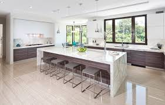

<!DOCTYPE>
<html>
</html>
<head>
    <link rel="stylesheet" href="style.css">
</head>
<body>
    <h1>The Elegant house</h1>
     <div class="columns"></div>
    <ul class="price">total amount</ul>
    <li class="header">basic</li>
    <li class="bue">R1,332,056</li>
    <li class="monthly">R53,282,24</li>
    <li class="email">irenemokgehle@gmail.com</li>
    <li class="contact">(012) 732 6386</li>
    <a href="buy.html" class="button">Buy now</a>
    
    <p>WARM AND INVITING FAMILY HOME
Warm and inviting family home

Double storey spacious family home with lawned garden is nestled in the quiet tourist village of cullinan, a mere 20 Km east of Pretoria. The home offers 4 double bedrooms, 2 bathrooms (mes), guest toilet, lounge, open plan kitchen and dining room with enclosed built-in braai, kitchen with separate laundry, 3 garages with direct access plus secure under-cover parking for caravan lovers. The home also offers an outside room with bathroom. Bedrooms leads onto private balconies.The houses stood together in all seasons, feeling the rain and sunshine just the same. In any weather they sheltered our families, stood firm against the winter wind, yet let in brilliant light even as it blew. That's how they were on our street, shoulder to shoulder as if welded there at their birth. Those walls heard my pain, even the silent screams, the ones so shrill behind unsmiling smiles, and they heard my laughter too, the sort that painted the walls with my soul.</p>
    
    <h2>bedroom</h2>
    
    <h2>bathroom</h2>
    <h2>Living room</h2>
    
    <h2>kitchen</h2>
    
    <a href="index.html">Home</a>
</body>
</html>